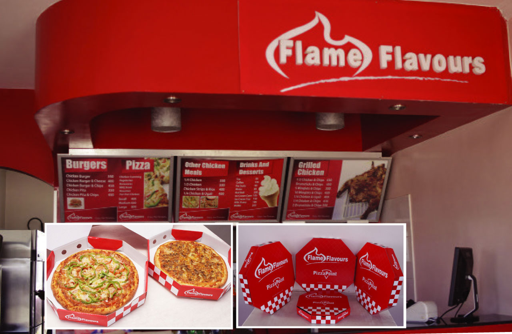

UPISHIDIGI CAMPAIGN
Watu Media
In order to improve Miriam’s (archetype) cooking experience to one that is healthier, cleaner and cost effective, PS Kenya was implementing a behavior change communication campaign that aimed to create awareness to ‘Miriams’ in Kenya on benefits of cleaner cooking, what cooking technologies exist and where they can be found. The PS Kenya project was multi-sectorial touching on various sectors in Kenya including energy, education, environment, home economics and gender therefore, involvement of these sectors was the key to the successful implementation of the project

Flame Flavours
AFlame Flavours is a fast food retail company and have been in the market for 7 years.They approached Watu Media to come up with the overall branding of the various merchandise as well as come up with creative ways of amplifying the brand across the board. We wanted to help Flame Flavours not only communicate better within current markets, but also deliver a brand identity that enabled them to grow and enter new markets. The identity we designed is intended to reflect their culture and craftsmanship, it’s intricate yet flat and modern.
What We Did
Visual Identity | Branding | Web Design | Package Design
Client : Flame Flavours